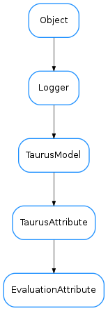

EvaluationAttribute¶

-
class
EvaluationAttribute(name, parent, **kwargs)[source]¶ Bases:
taurus.core.taurusattribute.TaurusAttributeA
TaurusAttributethat can be used to perform mathematical operations involving other arbitrary Taurus attributes. The mathematical operation is described in the attribute name itself. An Evaluation Attribute will keep references to any other attributes being referenced and it will update its own value whenever any of the referenced attributes change.See also
Warning
In most cases this class should not be instantiated directly. Instead it should be done via the
EvaluationFactory.getAttribute()-
addListener(listener)[source]¶ Add a TaurusListener object in the listeners list. If it is the first listener, it triggers the subscription to the referenced attributes. If the listener is already registered nothing happens.
-
static
getId(obj, idFormat='_V%i_')[source]¶ - returns an id string for the given object which has the following
- two properties:
- It is unique for this object during all its life
- It is a string that can be used as a variable or method name
Parameters:
-
preProcessTransformation(trstring)[source]¶ parses the transformation string and creates the necessary symbols for the evaluator. It also connects any referenced attributes so that the transformation gets re-evaluated if they change.
Parameters: trstring ( str) – a string to be pre-processedReturn type: tuple<str,bool>Returns: a tuple containing the processed string and a boolean indicating if the preprocessing was successful. if ok==True, the string is ready to be evaluated
-
read(cache=True)[source]¶ returns the value of the attribute.
Parameters: cache ( bool) – If True (default), the last calculated value will be returned. If False, the referenced values will be re- read and the transformation string will be re-evaluatedReturns: attribute value
-